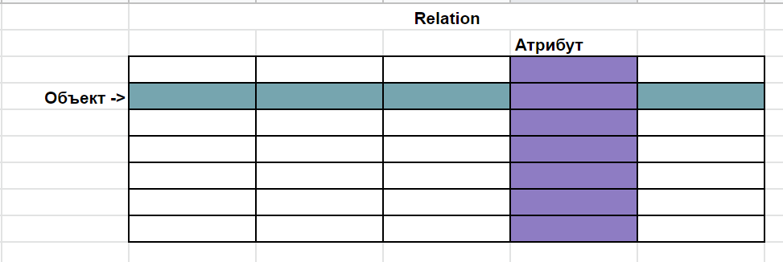
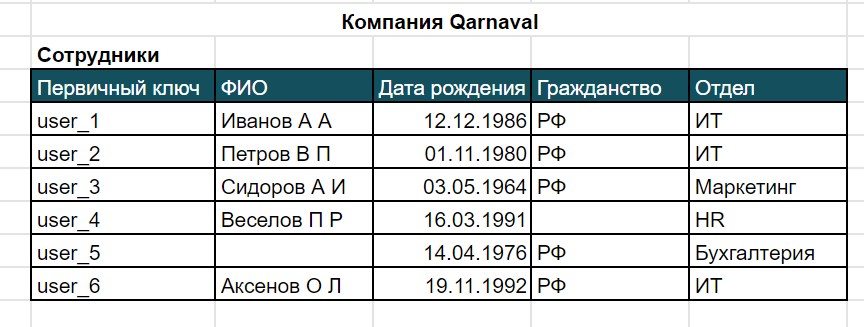
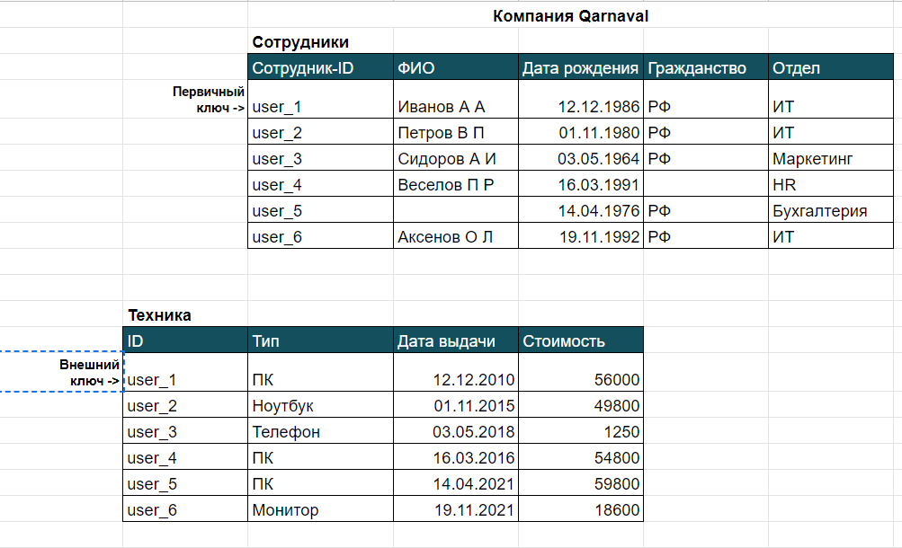

Знакомство с базами данных
Мы уже говорили о базах данных (database/DB), когда разбирали клиент-серверную архитектуру, и выяснили, что они предназначены для хранения и предоставления пользователям информации.
В жизни каждый из нас так или иначе сталкивается с базами данных — мы пользуемся телефонными справочниками, каталогами товаров, списками книг и тому подобным. Даже сеть интернет представляет собой базу данных — столько там хранится информации, которую мы можем получить, записать, удалить оттуда.
Формальное определение базы данных — это организованный набор данных, хранящихся длительное время и доступных в электронном виде (имеем в виду определение для компьютерных технологий).
Классификация баз данных разнообразна, и есть несколько факторов, по которым они разделяются. Первый — это классификация баз по типу хранимой информации: фактографические и документальные. Фактографические данные — это краткая информация об объектах, записанная определённым образом, например телефонный справочник. Документальные данные — это данные разного формата: текст, видео, картинки.
Второй тип классификации — по характеру организации информации: она может быть структурированной, неструктурированной или частично структурированной. Телефонный справочник — структурированная база данных, тут данные расположены в алфавитном порядке.
Третий тип делит базы данных по типу хранения информации, т. е. по принципу организации хранения. Базы данных могут быть локальными, централизованными и распределёнными. Локальная предназначена для одного пользователя (или нескольких). Например, каталог папок на вашем компьютере — вы организуете их хранение и пользуетесь информацией оттуда. Централизованные базы данных представляют собой удалённое хранилище данных, к которому имеют доступ много пользователей как одновременно, так и нет. Простой пользовательский пример для понимания — каталог книг на сайте электронной библиотеки, к которому могут иметь доступ сразу несколько пользователей, причём каждому пользователю будет выводиться та информация, что он запрашивает. Распределённые базы данных похожи на централизованные за исключением того, как физически организовано хранение данных: они могут быть распределены по разным удалённым источникам (компьютерам), однако, с точки зрения пользователя, это никак не меняет его работу, он абсолютно точно также подключается к базе и запрашивает или записывает данные.
Ну и четвертый тип указывает на то, по какой модели организовано хранение данных. Это могут быть иерархические базы данных, сетевые базы данные и реляционные базы данных. Иерархические говорят сами за себя — данные представляют собой объекты, расположенные в порядке подчинения. Как генеалогическое дерево, каждый объект имеет своего родителя, а родительские объекты имеют потомков.
Сетевая модель позволяет объектам иметь связь друг с другом в любом порядке.
И реляционным (от англ. relation — отношения) базам данных мы будем уделять особое внимание, т. к. чаще всего приходится работать с ними. Они представляют собой таблицы, в которых хранятся данные. Таблицы имеют связи и, соответственно, объекты таблиц также имеют связи с объектами из других таблиц.
Более формально таблицу называют отношением, но слово “таблицы” прижилось, потому что это дает возможность лучше понять, что такое реляционные базы данных. Так вот, данные хранятся в таблицах, каждая строка таблицы является записью — это объект со своими атрибутами, которыми являются столбцы таблицы, их ещё называют полями.

Все столбцы, т. е. атрибуты имеют свой тип данных, например атрибут Фамилия имеет тип данных Строка. Дата рождения — тип данных Дата. А в каждую ячейку записывается конкретное значение для каждого объекта. Вот, к примеру, база данных сотрудников компании. В таблице 6 объектов — 6 строк, и у каждого объекта 4 атрибута: ФИО, Дата рождения, Гражданство, Отдел. В ячейках записаны конкретные значения для каждого сотрудника.

Обратите внимание на первый столбец: он, как правило, является первичным ключом. Что это значит ? Ключ — это то значение, по которому мы можем уникально идентифицировать каждый объект. Это как серия и номер паспорта, по ним мы точно скажем, что этот человек — Иванов Иван, а этот — Петров Петр.
Есть ещё понятие внешнего ключа. Это такое значение, которое будет связывать объект из одной таблицы с объектом в другой. По сути это копия первичного ключа таблицы в другой таблице.

В этом примере можем видеть, как по ключу можно связать сотрудника с выданной ему техникой.
Как же мы можем взаимодействовать с базой данных? Мы можем запрашивать оттуда информацию об объектах, записывать в базу и удалять из неё, изменять информацию. Различные пользователи имеют различные возможности взаимодействия с базой, например кто-то не может записывать и удалять информацию в базу, а кто-то может всё, например администратор базы данных. При работе на реальном проекте, как правило, существуют тестовые базы данных — это копии “боевых” баз данных, и тестировщики имеют доступ к тестовым данным в этих базах.
Для того чтобы было возможно и удобно взаимодействовать с базой данных, используют СУБД — система управления базой данных. Их существует огромное множество, наиболее известные — Oracle, MySQL, PostgreSQL. По сути, работа с ними не представляет собой ничего сложного: нужно просто установить такую программу к себе на компьютер, настроить подключение к базе данных и работать в ней.